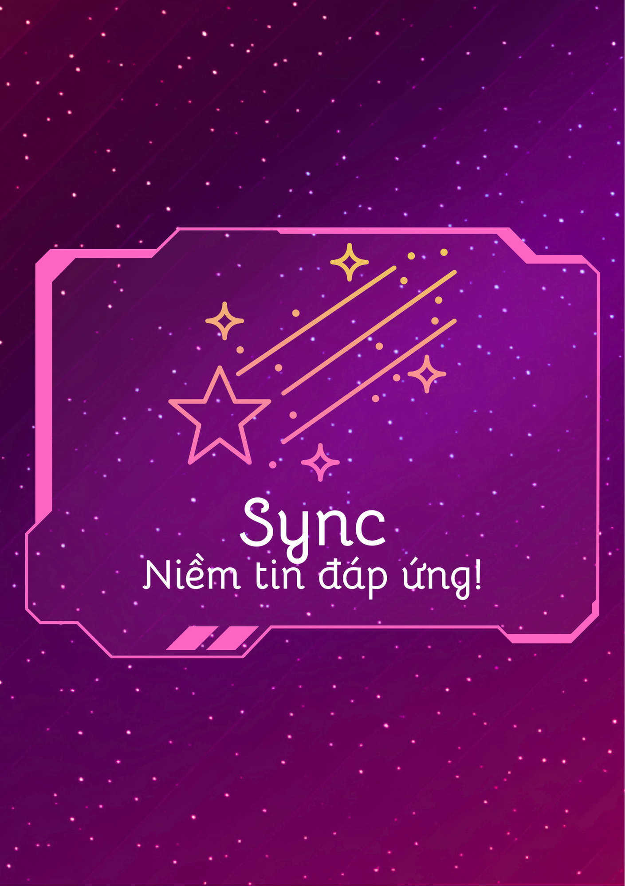

Chào mừng bạn đến với Good-way Edition: Fairy Draw (Phiên bản IT)!
-Nơi mang lại Công Nghệ - Tin Học hoàn mỹ-
Hãy dùng máy tính, máy tính bảng hoặc laptop trên website để có trải nghiệm tốt nhất!
Điểm cao nhất: 0
Round cao nhất: 0
Round cao nhất: 0
Nhấn Ctrl+F5 để lấy lại xếp hạng.
Chuyển sang Phiên bản gốc
----------- Hướng dẫn chơi -----------
- Chơi vô hạn đến khi hết cơ hội. Mỗi round bốc 1 trong 4 lá (2 lá bộ môn + 1 lá ngôn ngữ lập trình + 1 lá chức năng).
- Sau khi bốc trúng 1 lá chức năng thì sẽ được bốc lá tiếp trong cùng round đấy (Trừ lá Boost).
- Cứ sau 5 round, bạn nhận được Bonus Round với 4 lá chức năng nhưng trong round đấy chỉ được phép bốc 1 lần.
- Trả lời câu hỏi trắc nghiệm (4 đáp án) trong 20 giây. Trả lời đúng câu hỏi sẽ được 10 điểm (Môn học) hoặc 20 điểm (Ngôn ngữ lập trình), và có quyền vào round tiếp theo. Càng về sau, thời gian trả lời sẽ giảm đi.
- Mỗi người chơi có 3 cơ hội. Trả lời sai hoặc hết giờ sẽ mất 1 cơ hội và không đến round tiếp theo.
Dự án game thuộc về Trần Đặng Bình Minh (MinhCampbell) - Trưởng bộ phận BMSTORY Entertainment và Các thành viên trong CLB Tin học của Trường Đại Học Kinh Tế - Kỹ Thuật Công Nghiệp.
Phiên bản cập nhật Beta v25.9.16: Sửa lỗi, nâng cấp tính năng game, Xếp hạng.
Thông báo cập nhật và bảo trì dự kiến vào tháng 10/2025: Thêm thẻ chức năng, ngôn ngữ lập trình mới.
Thông báo gửi câu hỏi cụ thể ở phần dưới của trang web này. Đọc kỹ nội dung trước khi gửi về ban tổ chức.
Cảm ơn các bạn đã cùng chơi và đồng hành với chúng tôi!
| Lá chức năng | ||
|---|---|---|
| Lá | Chức năng | |
 |
Jackpot - Nhân đôi (x2) điểm có được và tiếp tục round hiện tại. | |
| A-HA! - Nhân 5 lần (x5) điểm nhận được khi trả lời đúng câu hỏi môn sở trường (Sau khi bốc trúng lá A-HA! thì sẽ có lựa chọn môn sở trường). Lưu ý: Chỉ được chọn 1 môn duy nhất, có thể thay đổi khi bốc lá A-HA! lần thứ 2. |
||
| Boost - Cộng 50 điểm và lập tức đến round tiếp theo. | ||
| Protection - Không bị mất cơ hội khi trả lời sai. Tuy nhiên, hệ thống sẽ đổi câu hỏi khác mà vẫn ở bộ môn đã chọn. (Có thể giữ nhiều lá cùng lúc) Lưu ý: Có thể bốc lá khác trong bộ bài hiện tại. |
||
|  | Sync - Cộng thêm 5-10 điểm khi trả lời đúng và cộng dồn cho các câu hỏi được trả lời chính xác liên tiếp sau đó. | |
| STOP - Bỏ hẹn giờ để trả lời câu hỏi kế tiếp (Có thể giữ nhiều lá cùng lúc) Lưu ý: Chỉ được dừng 1 lần/câu hỏi duy nhất và sẽ mất đi sau khi trả lời xong. |
||
| "Database Chief"'s Milestones Bảng cột mốc của "Trưởng gia Cơ sở dữ liệu" |
||
|---|---|---|
| Cột mốc | Round (Tri thức) | Điểm (May mắn) |
| C | 25-40: Không tệ | 3000-7999: Cũng không may mắn lắm |
| B | 41-80: Khá lắm | 8000-19999: Có niềm tin |
| A | 81-179: Quá giỏi | 20000-49999: Ông hoàng trúng tủ |
| S | 181-300: Xuất sắc | 50000-119999: Jackpot.exe |
| SS | 301-450: Tinh hoa Công Nghệ | 120000-299999: Sổ xố 365 ngày |
| Peak SS | 451 trở lên: Siêu sao Công Nghệ | 300000 trở lên: Trùm bài |
Gửi thêm câu hỏi cho nhà phát hành